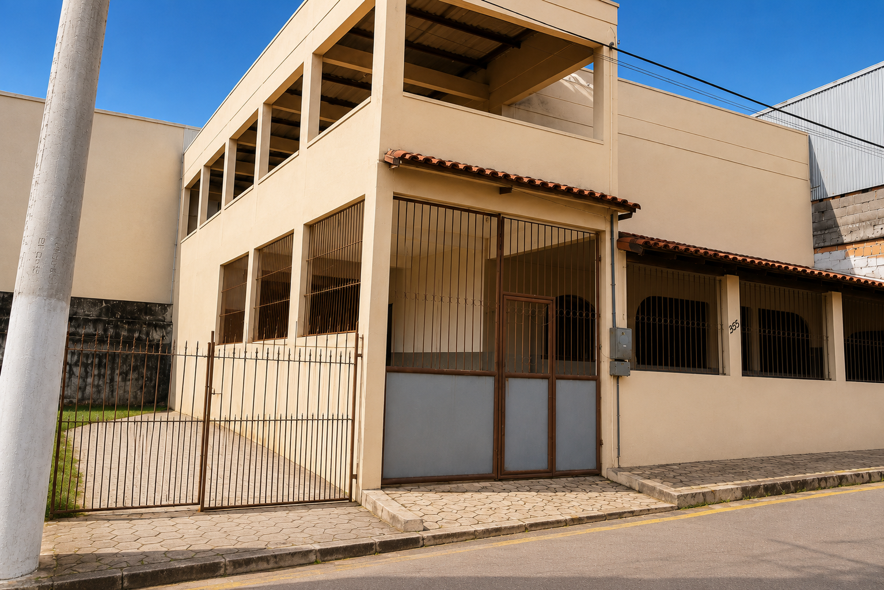
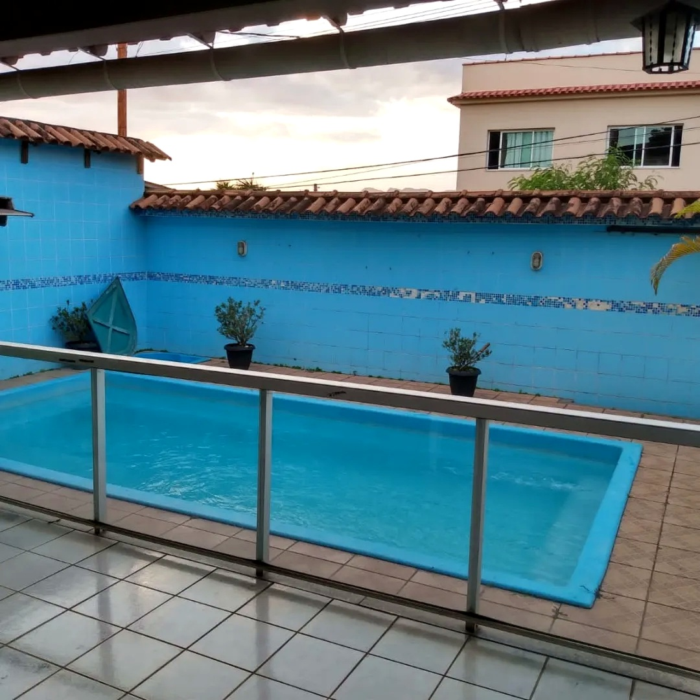
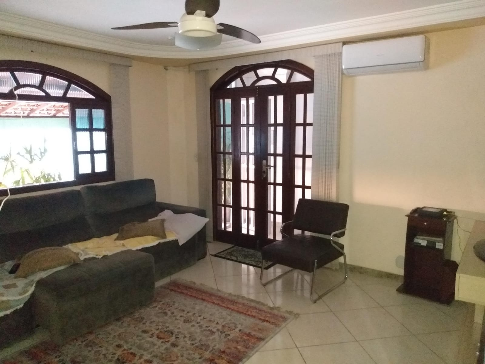
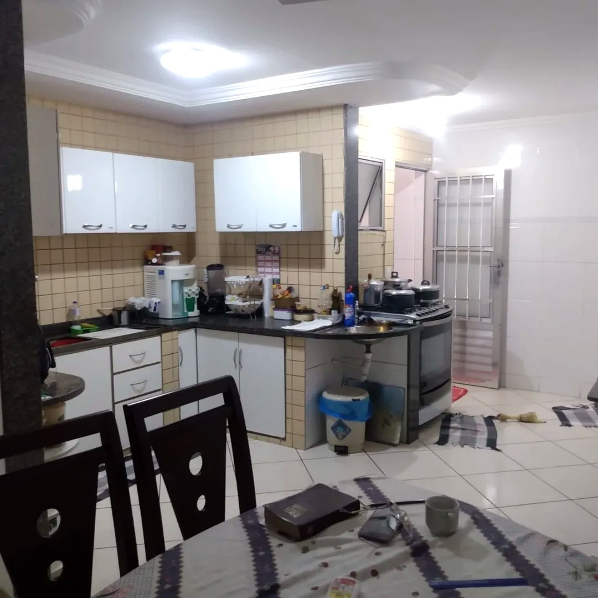
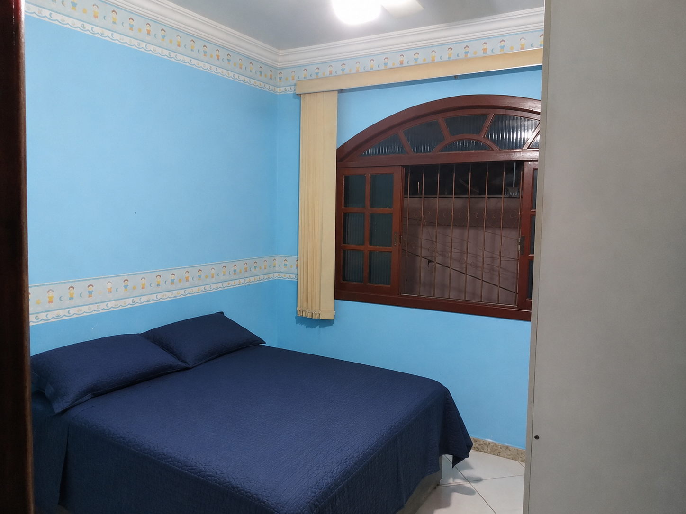
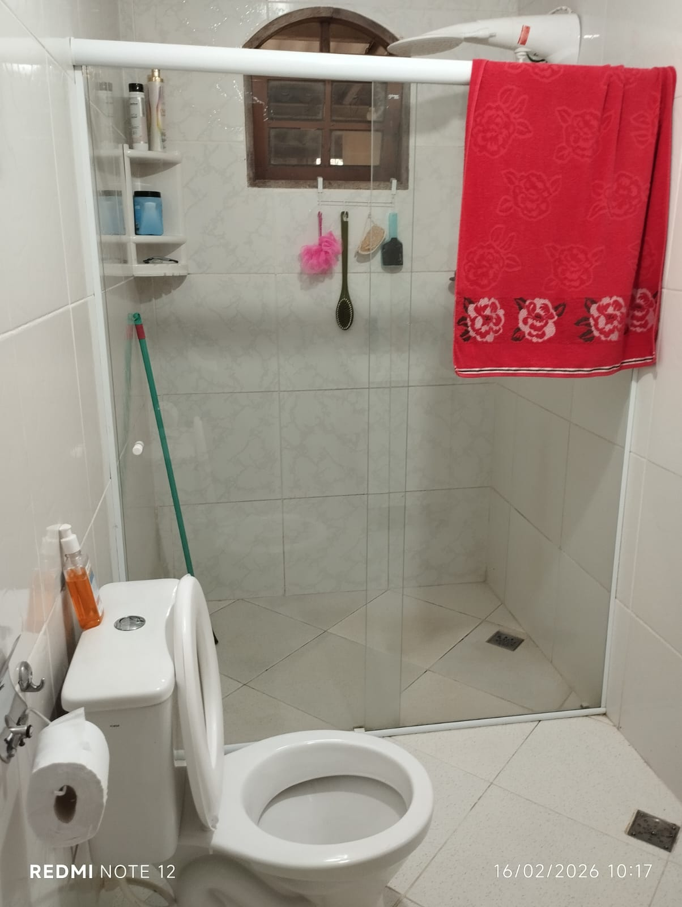

Galeria do Imóvel






Destaques do Imóvel
2 Casas
Casa Maior embaixo
Piscina
2 Vagas
🏡 Gostou deste imóvel?
Fale diretamente com o corretor e receba fotos adicionais, informações completas e todos os detalhes deste imóvel.
- ✔ Atendimento personalizado
- ✔ Fotos e informações completas
- ✔ Negociação transparente
- ✔ Resposta rápida
📝 Descrição do Imóvel
Excelente oportunidade no bairro Santo André, em Cariacica/ES, próximo ao Terminal de Campo Grande e ao Faça Fácil. O imóvel conta com duas casas independentes, oferecendo uma excelente opção para famílias que precisam de espaço, privacidade e praticidade.
A casa maior fica no pavimento inferior e a segunda casa, menor, fica no pavimento superior. O imóvel conta ainda com piscina, garagem para 2 veículos e espaços que proporcionam conforto para toda a família.
Aceita financiamento. O imóvel possui documentação disponível para financiamento, facilitando o processo de aquisição.
Gostou deste imóvel? Entre em contato e receba mais informações, fotos adicionais e todo o suporte necessário para conhecer esta oportunidade.
💬 Falar com o Corretor📍 Localização do Imóvel
Santo André
Cariacica - Espírito Santo
👤 Conheça seu Corretor
Edson Resende
Corretor de Imóveis
CRECI-ES 009974-F
Especialista em Captação e Venda de Imóveis
Especialista em captação e
venda de imóveis em Vila Velha,
Cariacica, Vitória e região.
Ofereço atendimento personalizado,
avaliação de imóveis,
divulgação estratégica e acompanhamento
completo durante todo o processo de
negociação, com transparência,
segurança e compromisso com os melhores
resultados para meus clientes.